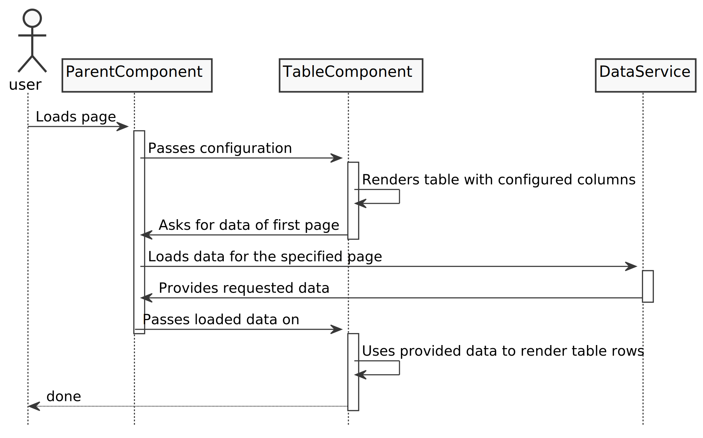
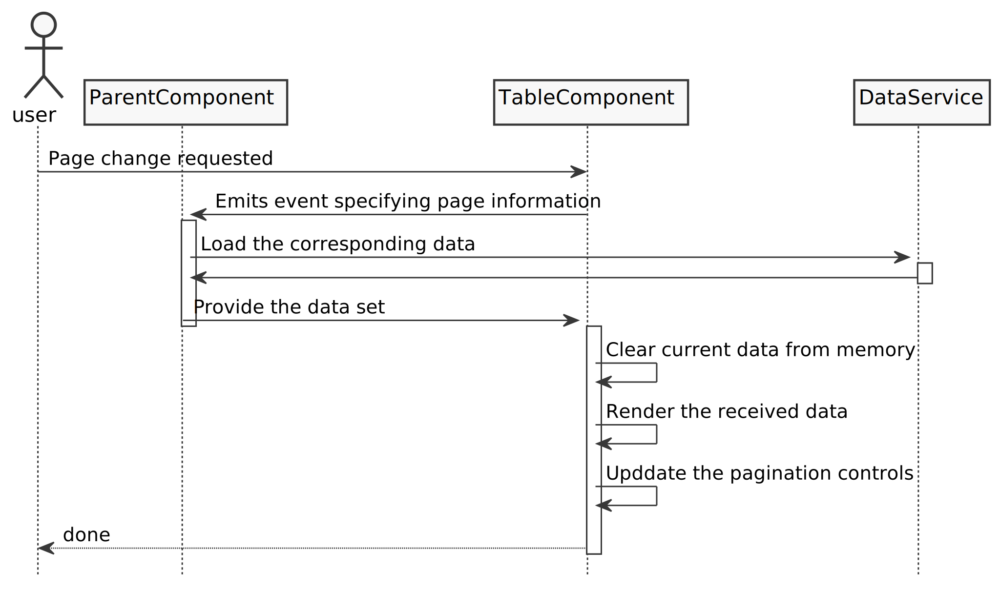

Creating a reusable table component in Angular
“There has to be a better way” was all I could think about when I reviewed the implementation of an application heavy with data tables and saw that with the various abstractions and specific implementations, a table required the use of eight or more Angular components with the accompanying passing of data through all those layers via property and event bindings. So I sat down and tried to tackle the problem myself.
Architecture
I came up with a first-order architecture which will work with non-nested data structures and has the following properties and behaviors. It
- accepts a configuration object with
- specification of the columns, their title, data attribute on the object
- the available filterable columns
- any sort options that needed to be displayed
- would solely deal with the display of the data
- would not deal with the loading or management of the data, because that would destroy its reusability. Instead, it would emit events and let the parent component manage the interaction with the respective services.
- would provide UI elements to filter and change pages but rely on the containing component to retrieve the actual data for the current table settings
- would maintain the state of the display of the data, which should not be handled by the containing component
On page load, the flow of data and the communication between two components ParentComponent
and TableComponent and a DataService would look like this:

The benefits of this setup are that the TableComponent can be reused for the display of any data type, as it receives a configuration object describing the columns with name, the object property containing the data and instructions on which columns the user can sort by and which ones allow filtering.
Further, the loading of the data happens in the containing component, as it should be interfaced with the service or data source retrieving the data type to be displayed. That nicely separates the data structure and loading from its display and keeps the table display component blissfully unaware of the exact data structure — Everything comes in through the configuration and property binding.
Leaving the setting of the sort and filtering settings to the table component has the benefit that all the presentation concerns are handled by the table component and it can inform the host component what data to load by passing events back to the host component in a standardized format. This nicely separates the concerns of displaying the data and actually interfacing with the various data services, which will be handled by the specialized components and not by the generic table component.
The configuration for the TableComponent could look like this:
const tableConfig: DataTableType = {
columns: [
{title: "First Name", dataProperty: "firstName", sortable: true, filterable: false},
{title: "Last Name", dataProperty: "lastName", sortable: true, filterable: true},
{title: "Occupation", dataProperty: "occupation", sortable: false, filterable: false},
{title: "Branch", dataProperty: "companyBranch", sortable: false, filterable: true},
],
rowActions: [
{label: "Edit", actionIdToReturn: "edit", logoImageUrl: "...", showOption: (x) => true },
{label: "Copy", actionIdToReturn: "copy", logoImageUrl: "...", showOption: (x) => x.completed },
{label: "Delete", actionIdToReturn: "delete", logoImageUrl: "...", showOption: (x) => !x.isActive },
{label: "Message", actionIdToReturn: "message", logoImageUrl: "...", showOption: (x) => x.permitsMessaging },
],
rowsPerPage: 20,
}This configuration shows a property called rowActions which is another configuration
object, this time for the rows, indicating what a user should be able to do with the data
on the row. To effect the change in the data set, the TableComponent would emit an event
with the actionIdToReturn value to the host component. It is then the HostComponent’s
responsibility to perform the action indicated by the actionIdToReturn identifier (like “edit”
or “delete”)
That last option in the above rowActions entry, showOption, is likely the most interesting: It
accepts a function that is passed the object for the row to be displayed in the table and
returns a boolean indicating whether to display the action for the row to the user, based on
the data in the row. That way, one could implement a deletion button that only shows for disabled
entries or a button which would initiate messaging only for users who have opted into that
feature, as shown in this example.
Component implementation for generic data table
The following code excerpt shows the beginnings of a generic component to manage the tasks
for a table component. It uses two @Input() and two @Output() bindings. The first
@Input() accepts the table configuration as shown in the previous listing, the second is a
property binding to accept the data to be rendered from its parent component.
As discussed before, there is an event emitter getDataForPage to initiate getting the data
to be displayed from the containing component. There also is an event emitter called startRowAction
to communicate to the containing component that the user wants to manipulate data in a row.
The emitted data from this method adheres to an interface RowActionWithData<A> so that events
containing the typed data payload can be emitted and processed by one method in the parent
component. The interface specifies that any event emitted should specify two things:
- the action to be performed (in the form of a string identifier) and
- the row data for which the action was started.
This allows the event receiver to react to any data contained in the row. The containing component then decides how to fulfill that request — through a redirect, a modal or any other action. That no longer is the responsibility of the table component, though.
Further, there is a generic method called onRowActionClicked(), which will be called in the
data table template for any button the user clicks to initiate an action on the data in a specific
row. As discussed previously, the data table component should not be aware of any data
specifics, so it delegates the processing of the request to the host component via the
startRowAction event emitter discussed in the previous paragraph.
@Component({
selector: 'data-table-wrapper',
templateUrl: './data-table-wrapper.component.html'
})
export class DataTableWrapperComponent<A> implements OnChanges {
@Input()
public tableConfig: DataTableType;
@Input()
public tableContent: A[];
@Output()
public getDataForPage = new EventEmitter<PageChangeEventType>();
@Output()
public startRowAction = new EventEmitter<{}>();
public pageList: number[];
public ngOnChanges(changes: SimpleChanges) {}
public onRowActionClicked(actionType: string, rowData: A): void {
const userAction: RowActionWithData<A> = {
actionToPerform: actionType,
rowData: rowData
};
this.startRowAction.emit(userAction);
}
}The template of this component is fairly straightforward angular HTML:
<table>
<thead>
<tr>
<th *ngFor="let columnHead of tableConfig.columns">{{ columnHead.title }}</th>
</tr>
</thead>
<tbody>
<tr *ngFor="let columnData of tableContent">
<td *ngFor="let columnHead of tableConfig.columns">
<div *ngIf="columnHead.dataField !== 'ROW_ACTIONS';else action_content">{{ columnData[columnHead.dataField] }}</div>
<ng-template #action_content>
<div *ngFor="let action of tableConfig.rowActions">
<img src="{{ action.logoImageUrl }}"
alt="{{ action.actionDescription }}"
*ngIf="action.showOption(columnData)"
(click)="onRowActionClicked(action.actionToPerform, columnData)"/>
</div>
</ng-template>
</td>
</tr>
</tbody>
</table>In rows 3-5, the table header is created from the previously discussed tableConfig.
Each row in the data set is rendered in rows 9 and 10 in the <ng-template /> tag pair, and this
implementation is using an Angular
template reference,
#action_content, and *ngIf to render the row actions in lines 11-18. Each configuration object
contains the
URL to an image and the alt label. We see here how the showOption() method defined above gets
used in the *ngIf in row 15: It gets passed a reference to the object being displayed in the row
and can therefore use any data on the object to make its decision. When this method returns false,
it suppresses the rendering of the action button.
Implementing pagination
The pagination implemented here works as described in this sequence diagram:

Here, the pagination implementation is part of the TableComponent, implemented as a subcomponent
which manages its own pagination state. This has the benefit that we avoid code duplication for
the pagination in every component using a table and we can simply pass the change of a page
through the getDataForPage EventEmitter mechanism introduced earlier.
The markup for the component looks like this:
<div class="pagination" *ngIf="listOfAvailablePages.length > 1">
<ul>
<li *ngIf="this.paginationService.currentPage > 1" (click)="onPageSelection(1)"><<</li>
<li *ngIf="this.paginationService.currentPage > 1" (click)="onAdjacentPageSelection(-1)"><</li>
<li *ngFor="let pageNum of listOfAvailablePages"
(click)="onPageSelection(pageNum)"
style="padding:10px;cursor:pointer">
<span *ngIf="pageNum !== this.paginationService.currentPage; else current_page">{{ pageNum }}</span>
<ng-template #current_page>
<span style="background: #ccc">{{ pageNum }}</span>
</ng-template>
</li>
<li *ngIf="this.paginationService.currentPage < listOfAvailablePages.length"
(click)="onAdjacentPageSelection(1)">></li>
<li *ngIf="this.paginationService.currentPage < listOfAvailablePages.length"
(click)="onPageSelection(listOfAvailablePages.length)">>></li>
</ul>
</div>- We of course suppress the display of the navigation if we don’t have more than one page for the data. This is implemented in line 5.
- We have links to return to the beginning and go to the end of the data set and to page through it
- The center list item gets repeated using
*ngFor()and generates a list of clickable items, which represent the pages of the table - The
<ng-template/>on line 13 gets rendered from the*ngIfon the previous line in case the page number to render is the current page number. It therefore is rendered differently.
The listOfAvailablePages property is an array with page numbers generated by the component
based on the last page number. The reason for this hacky work-around is that
*ngFor can, as of this writing, only traverse collections/arrays and not increment numbers
We therefore loop through an array in line 5 and attach a click handler for each page.
The corresponding TypeScript code looks like this:
@Component({
selector: 'data-table-pagination',
templateUrl: './pagination.component.html'
})
export class PaginationComponent {
@Input()
public listOfAvailablePages: number[];
@Output()
public pageChangeRequested = new EventEmitter<number>();
constructor(public paginationService: PaginationService) {
this.paginationService.currentPage = 1;
}
public onPageSelection(pageNumber: number): void {
this.paginationService.currentPage = pageNumber;
this.pageChangeRequested.emit(pageNumber);
}
public onAdjacentPageSelection(dir: number): void {
if (dir < 0 && this.paginationService.currentPage > 1) {
this.onPageSelection(this.paginationService.currentPage - 1);
} else if (dir > 0 && this.paginationService.currentPage < this.listOfAvailablePages.length) {
this.onPageSelection(this.paginationService.currentPage + 1);
}
}
}We see in the TypeScript that we have two methods, one for changing to a specific page number
(via onPageSelection()) and one for incrementing and decrementing from the current page via the
arrow buttons at the end of the page lists. Both methods lead to an event on the
pageChangeRequested event emitter, which the main component will listen for to request the
corresponding data that will later be rendered in the table.
So with that component now able to keep track of the current page, we can include it in the data table component as follows:
<table>
... (as shown above)
</table>
<data-table-pagination [listOfAvailablePages]="pageList"
(pageChangeRequested)="changePageTo($event)">
</data-table-pagination>The changePageTo() method in the parent component will receive the requested page number and
needs to pull the data from the data source for that page. This will be accomplishes through the
getDataForPage() event emitter introduced earlier, which will emit an event of type
PageChangeEventType, as in the following code snippet:
public changePageTo(pageNumber: number): void {
const eventData: PageChangeEventType = {
fromEntry: (pageNumber - 1) * this.tableConfig.entriesPerPage,
toEntry: (pageNumber * this.tableConfig.entriesPerPage),
};
this.getDataForPage.emit(eventData);
}All that’s left now for the main component is to retrieve the data to be displayed for the
requested page and pass that data to the tableContent property of the TableComponent. And
that concludes my overview of how to implement a generically usable table component which can be
used for a number of very different data sets.
Summary
In this post, I described a generic table component which can display and paginate a number of disparate data types. To accomplish that goal, I used two nested Angular components, one for the rendering of the data and the other for displaying the pagination and reacting to user requests for page changes.
This architecture also allows to add the functionality to sort and filter data through a similar mechanism described here, where the table component makes its needs known and passes them to the containing component to load the data via a service.